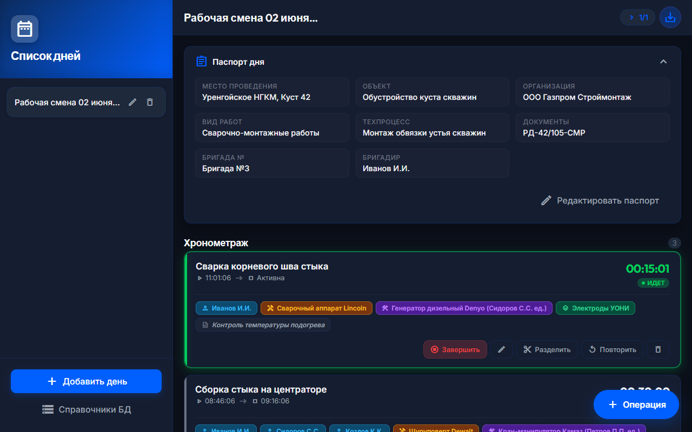
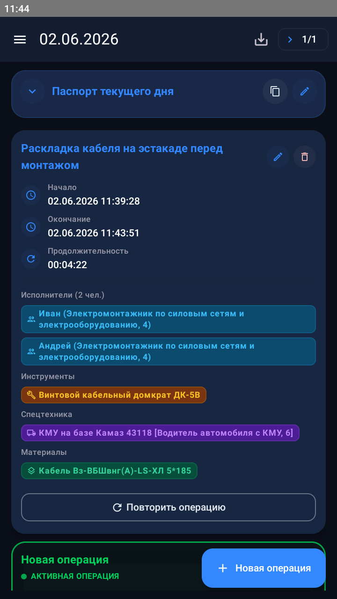
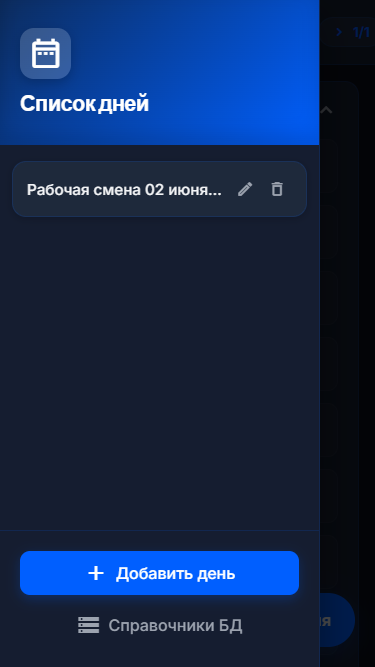
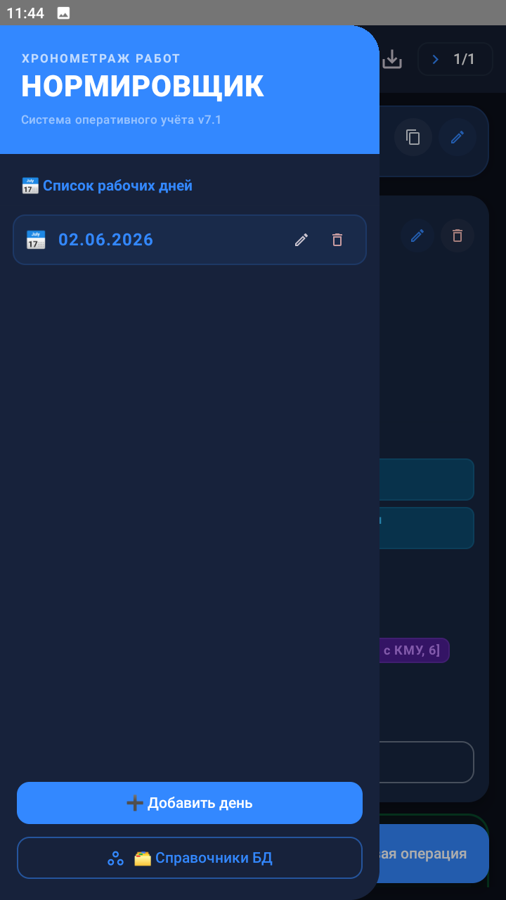
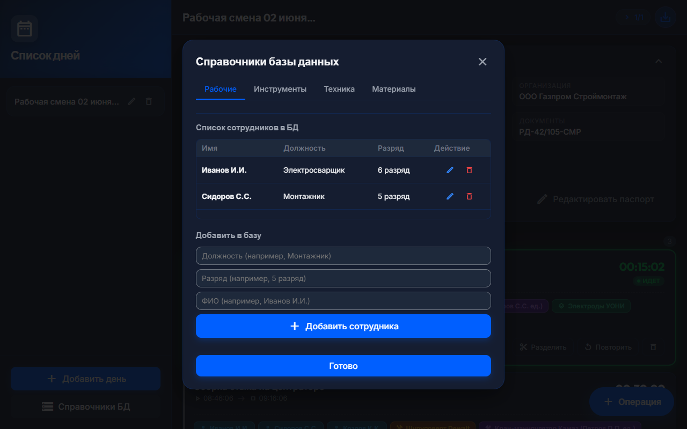
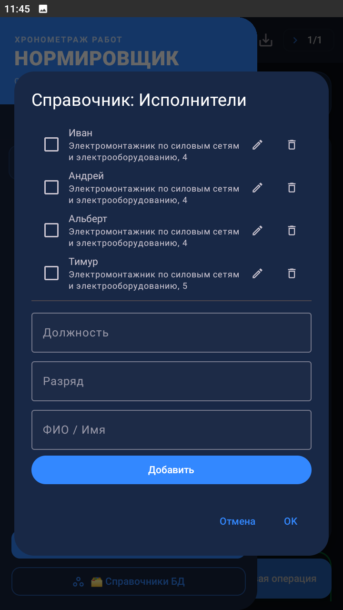
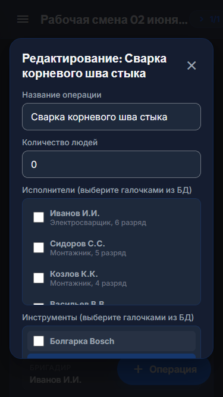
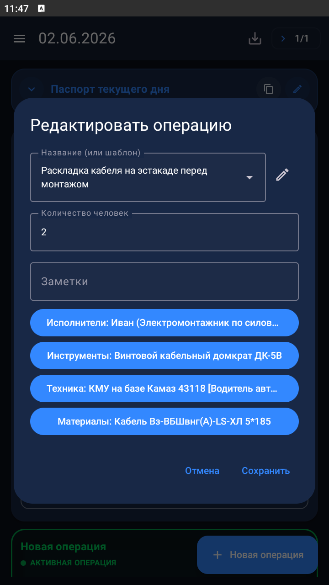

Профессиональный инструмент для инженеров-нормировщиков. Фиксируйте операции в реальном времени, ведите локальные справочники рабочих, техники и материалов, и выгружайте готовые Excel-отчеты в один клик. Полная автономность и работа без интернета.
Интерфейс спроектирован для мгновенной фиксации событий на стройплощадке в перчатках или на ходу.
Обе платформы используют единый дизайн-код и структуры данных, адаптированные под форм-фактор устройства.
Учет паспорта дня, тикающие секундомеры, запуск и остановка операций.


Выбор смен, переименование, удаление дней, быстрый переход к справочникам БД.


Ведение базы рабочих (должность, разряд), спецоборудования и материалов.


Указание количества рабочих, выбор инструментов, материалов и машинистов из БД.


Это упрощенный интерактивный симулятор хронометража. Нажмите **«Старт»**, чтобы запустить таймер, добавьте заметку или выполните «Разделение» операции, как в реальном приложении.
Список пуст. Нажмите «Новая операция» выше, чтобы протестировать таймер.
Обе версии полностью синхронны по функционалу и работают 100% автономно на вашем устройстве.
Идеальный выбор для корпоративных смартфонов и планшетов. Работает как полноценное нативное приложение. Быстрый экспорт в локальные файлы телефона, поддержка системных уведомлений и фоновых таймеров.
Оптимально для пользователей iPhone, iPad или ноутбуков. Не требует установки через App Store. Запустите в один клик через Safari или Chrome, добавьте на экран «Домой» и пользуйтесь офлайн.